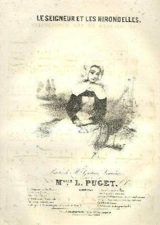
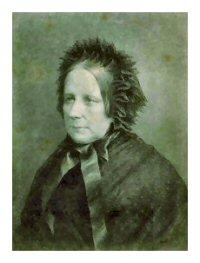

Les hirondelles
The Swallows
Dialecte de Haute Cornouaille
|
Cependant, à partir de 1845 l'argument attribue cette composition "à deux sœurs ". Le dialecte de Haute-Cornouaille laisse supposer qu'elles n'habitaient pas à Nizon, comme la plupart des informateurs de la première édition. Dans sa lettre datée de novembre 1906, Camille de La Villemarqué indique que "Les hirondelles" aurait été composé conjointement par Anne Penven qui avait épousé Jean-Marie Gourlaouen, de Saint-Yvi, en 1832; par Marie-Jeanne Mestric , épouse Le Carrouer (mariage à Nizon en 1835) et par Clémence Péron qui était, disait-elle, de la même famille qu' Yves Péron . Il est question d'un Youen (Yves) Penven dans le chant sur les mariages de Katell Rouat et d'une certaine Pélagie. C'est sans doute un parent d'Anne. La table B signale une autre pièce chantée par Anne Penven: "Paotred Koad Eurjaou" (Les gars d'Euret) qui n'apparaît que dans le MS de Keransquer, pp. 307 et 179. |
 |
However the 1845 "Argument" ascribes the composition to "two sisters" . As the Upper-Cornouaille dialect is used, we may infer that they didn't dwell near Nizon like most of the informants for the first Barzhaz edition. In a letter dated from the year 1907, Camille de La Villemarqué writes that the "Swallows" song was composed jointly by Anne Penven (1815 - 1888) who had married Jean-Marie Gourlaouen, from Saint-Yvi, in 1832; by Marie-Jeanne Mestric , wife of Le Carrouer (marriage in Nizon in 1835) and by Clémence Péron who was, as she wrote, a relative of Yves Péron 's. There is mention of a named Youen (Yves) Penven in the song about the weddings of Katell Rouat and of another girl named Pélagie. He mat be related to Anne. Table B lists another piece sung by Anne Penven: "Paotred Koad Eurjaou" (The lads of Euret) which is to be found only in the first Keransquer MS, on pp. 307 and 179. |
Mélodie - Tune
(Cf. An eostig ).
| Français | Français | English |
|---|---|---|
|
Le beau manoir par un chemin. 2. Un sentier tout blanc que domine Un épais buisson d'aubépine. 3. Tout chargé de fleurs qu'aime bien Le jeune fils du châtelain. 4. Que ne suis-je fleur d'aubépine, Qu'il me cueille de sa main fine, 5. De cette main dont la blancheur Surpasse encor celle des fleurs. 6. Que ne suis-je fleur d'aubépine, Qu'il m'épingle sur sa poitrine, 7. Lui que l'on voit partir au loin, Dès que chez nous l'hiver revient. 8. On le voit partir vers la France, Où l'hirondelle aussi s'élance. 9. Puis, lorsque le printemps revient, Vers nous il revient, aussi bien. 10. Quand le bluet point dans le pré, Et que l'avoine en fleur paraît, 11. Qu'on entend chanter les pinsons Et les linots à l'unisson, 12. Il vient assister à nos fêtes; A nos pardons il veut paraître. 13. Des fleurs et fêtes à foison, J'en voudrais en toute saison, 14. Voir les hirondelles voler Dans notre ciel toute l'année. 15.Je voudrais les voir voltiger Autour de notre cheminée. |
De mon village au manoir Et du manoir y ramène Le fils du seigneur nous voir 2. Il aime le frais ombrage Les fraiches fleurs d'un buisson Qui naquit à son passage, Au bord du sentier, dit-on. 3. J'en voudrais être une branche... Un bouton rose... une fleur, Qu'il me prit de sa main blanche Et me plaçât sur son cœur. 4. Il part avec l'hirondelle, L'hiver il nous fuit toujours, Et toujours revient comme elle, Chez nous avec les beaux jours. 5. Avec l'avoine fleurie, Les linots et les pinsons, Les bluets dans la prairie, Les fêtes et les pardons. 6. J'aimerais, toute l'année, Les bluets et les beaux jours... Et dans notre cheminée Les hirondelles toujours! |
Linked by a small path together. 2. A path you will find shining bright With a hawthorn bush by its side. 3. A bush all covered with blossoms, In them takes delight the squire's son. 4. I wish I were hawthorn blossom And picked by his hand, so handsome. 5. By his handsome hand which, by far Is more white still than blossoms are. 6. I wish I were hawthorn blossom On his heart he would pin me on. 7. He always will depart from here When the winter is drawing near. 8. Towards France we see them leaving Like all the swallows that take wing. 9. And later when the new spring comes Towards us also he returns. 10. When the oats stalks peep out their heads And the cornflowers in the meads. 11. When the chaffinch and the linnet Strike up their song in the thicket. 12. He comes back and all our frolics And all our pardons he visits. 13. If only we had feast and flower And merriment all through the year, 14. And could see the swallows flutter About here all the year over. 15. I wish that I could always see Them flutter around our chimney. |
Cliquer ici pour lire les textes bretons.
For Breton texts, click here.

|
Résumé
La belle saison ramène au pays, avec les hirondelles, le jeune châtelain cher au cœur des deux paysannes, deux sœurs, qui ont composé cette chanson et voudraient que les fleurs poussent en toutes saisons, pour qu'il ne parte plus jamais. Un succès planétaire! La Villemarqué, dans l'édition de 1867, indique que ce poème (d'un goût douteux) a, comme les autres, été traduit en anglais, en allemand, en suédois et imité par un académicien français (Louis Maignen dans "Rustiques" - 2ème partie: Chants Bretons, 1860). Madame Sabatier le chante sur un air de Loïsa Puget (1810-1839, cette "Reine de la romance", ancêtre des compositeurs-interprètes, en composa plus de 300!). Voici, de fait, le compte-rendu du 13ème concert de la revue musicale "Le Ménestrel" en date du dimanche 15 janvier 1843: "...Mme Sabatier est revenue ensuite recueillir d'unanimes bravos en chantant "le Seigneur et les Hirondelles" (Le Seigneur, qui n'a que seize ans...), de l'Album de Loïsa Puget..." Il a aussi inspiré une poétesse, Mme Auguste Penquer ("Révélations poétiques" 1865) que La Villemarqué félicite. En revanche, Lady Georgiana Fullerton qui en a publié une traduction en l'attribuant aux paysannes du Latium et en changeant le manoir en palais, l'enfant du manoir en fils du maître du palais, l'aubépine en oranger, les bleuets en anémones et les avoines en amandiers, s'attire, quant à elle, une verte réprimande. Les romances françaises à la mode de Bretagne Déjà, en 1845, il s'élevait contre les faiseurs de romances à la française, lorsqu'il écrivait dans les "notes et éclaircissements qui suivent le présent chant: " Lorsque,... comme en cette circonstance, ... l’auteur se trouve lié à celui qu’il chante par une communauté d’origine, de langue, de traditions, de souvenirs, d’intérêts et d’affections ,... il s’enveloppe d’ombres discrètes, et le mystère prête à son œuvre un charme nouveau. Mais malheur a qui le trahit ! Alors arrivent par troupeaux ces chercheurs de motifs et de paroles qu’on appelle compositeurs de romances: jugeant l’esprit Français moins pénétrant que celui des paysans bas bretons, ils déchirent tous les voiles dont le chaste poête a enveloppé sa création virginale; ils chargent de notes l’harmonieuse plainte... et l’imprudent révélateur n’a plus qu’a se frapper la poitrine en répétant ce vers de Virgile, que M. Sainte-Beuve a fait passer avec tant de bonheur et d’art dans la poésie française : Perditus, ah ! liquidis immisi fontibus apros ! J'ai mis le sanglier dans la claire fontaine! (Amour du peuplier) " Comment ne pas comprendre que le mystérieux "enfant du manoir" n'est autre que le jeune Théodore de La Villemarqué, ce qui explique pourquoi il a accueilli dans son recueil ce discutable morceau? |
Résumé
The warm season brings back with the swallows, the young squire who is dear to the hearts of two young country girls, two sisters, who made this song and express their wish that flowers should always bloom to keep him here all the year over. A worldwide hit La Villemarqué in the 1867 edition of the Barzhaz mentions that this poem, like many others in the collection, was translated into English, German, Swedish, even imitated by a French Academician (Louis Maignen in "Rustics" -2nd Part: Breton Songs, 1860). Mrs Sabatier sings it on a tune composed by Loïsa Puget (1810-1839, this "Reine de la romance" who was the precursor of the 20th century singer-composers wrote over 300 love songs). And really, here is an account of the 13th concert of the musical journal "Le Ménestrel" dated 15th January 1843: "... Mme Sabatier came then back to collect unanimous applause when she sang "The lord and the swallows" (The lord is only sixteen...) from Loïsa Puget's Album ..." It also inspired Mrs Auguste Penquer (in "Poetic Revelations", 1865) who hereby earned La Villemarqué's congratulations. But Lady Georgiana Fullerton who published a translation of the song, ascribing the original to the Rome area peasants, changing the manor into a palace, the squire's son into a Master of the palace, the hawthorn into an orange tree, the cornflowers into anemones and the oats into almonds deserves a severe reprimand from the Breton Bard. French pastiches of Breton love songs In the 1845 edition of the Barzhaz La Villemarqué already rebuked makers of Breton love song pastiches, in the "notes and explanations" to the present song: "When...as in the present instance, the author is bound to the person sung of by a common origin, language and lore, by common memories, interests and affections... , he veils himself in unassuming dark shrouds and mystery makes his work still more attractive. But woe betide the man who betrays him! In that case there will surge hordes of rhymesters in quest of motives and lyrics who are known as love song makers . Since they admit that a Frenchman's mind is not so clear-sighted as a Lower Brittany peasant's, they tear off all the veils the shy poet has wrapped in his naïve art. They overload with notes the haunting lament... and the thoughtless secret violator must now bitterly repent repeating this verse by Vergil, so deftly and beautifully translated by M. de Sainte-Beuve: Perditus, ah ! liquidis immisi fontibus apros ! I attracted the boar to the limpid fountain! (Love of the poplar tree)" Now we must understand that the mysterious "child of the manor" was none other than young Theodore de La Villemarqué, which accounts for his including this rather preposterous poem in his collection. |

Lady Georgiana Fullerton
b. Tixall Hall, Staffs., September 23rd, 1812; d. January 19th, 1885).
“Ellen Middleton” (1844); “Grantley Manor” (1847); “Lady-bird” (1852); “Laurentia” (1861);
“Too Strange not to be True” (1864); “Constance Sherwood (1865); “A Stormy Life” (1867);
“Mrs. Gerald’s Niece” (1869); “Dramas from the Lives of the Saints” (1872); “The Gold-Digger,
and other Verses” (1872); “A Will and a Way” (1881). Several biographical works, etc. “Life,” by A. Craven.
(Source: Bartleby.com)